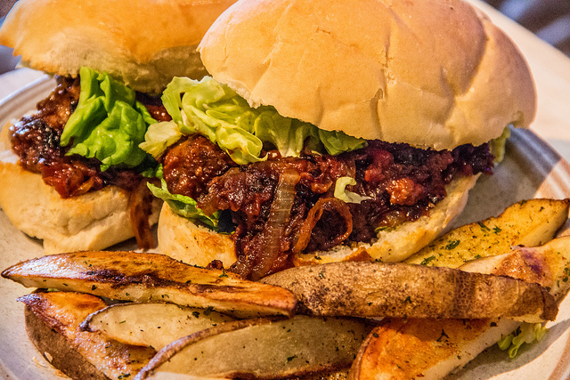

utenstat.no
utenstat.noVeganisme
18. februar 2015 | Sondre Bjellås
Et menneske som står for ikke-aggresjons-prinsippet, at ingen skal initiere vold og makt mot andre mennesker mot deres vilje, bør tenke seg grunnleggende om hvorfor prinsippet kun skal være gjeldende for samhandling mellom andre mennesker, og ikke samtidig gjelde for andre dyr.

Jeg ble ganske nylig veganer, det betyr at jeg ikke konsumerer og ikke bruker animalistiske produkter. Det inkluderer kjøtt, egg, melk, honning og mye annet.
Har i mange år hatt en diett med sterk reduksjon av kjøtt, spist en god del vegetarisk (ikke kjøtt, men melk, egg, honning), men har nylig valgt å ta det fulle skrittet til å bli veganer. Det at jeg har brukt lang tid på å forandre mine spisevaner, har garantert gjort det lettere å takle overgangen. Jeg forventer ikke at noen klarer å forandre seg selv over natten, men man bør sette seg et langsiktig mål og jobbe mot dette, hvis man virkelig tror på at reduksjon av vold vil være bra for seg selv og samfunnet.
Det finnes nok av gode dokumentarer som viser den forferdelige torturen som dyr går igjennom i vårt samfunn, spesielt i mat-industrien. Disse filmene kan du finne på YouTube og de setter dype spor, men volden i seg selv gir ikke nok argumentasjon for å forstå hvorfor man bør forandre seg. Her kommer Gary Yourofsky inn i bildet, som holder et utmerket foredrag om hvorfor du bør bli veganer.
Hvem tror du jeg stoler mest på av mine medmennesker? Mennesker som blindt lar andre dyr blir torturert uten omtanke, eller mennesker som tar et moralsk valg om å ikke lengre torturere andre dyr? Vår kapasitet for kjærlighet og vold er motsetninger, desto mer kjærlighet vi har i våre liv, desto mindre kapasitet har vi for vold. Veldig mange mennesker, de aller fleste faktisk, innser ikke at konsumering av animalistiske produkter er vold. Slik mange ikke innser at skatt er vold, reguleringer er vold. Dette er fordi fra vi blir født, så blir vi opplært gjennom propaganda til å tro på alle disse etablerte sannhetene. At vi trenger melk, at vi trenger kjøtt, at vi må betale skatt.
Å ikke betale skatt er noe de færreste kan gjøre uten at man blir utsatt for vold, men det å slutte å spise kjøtt, slutte å spise egg, slutte å drikke melk, det er noe absolutt alle kan gjøre. De alternativene som finnes i dag er faktisk bedre enn det du putter inn i kroppen din idag. Det finnes utrolige mange alternativer til melk, mange som smaker utmerket. De har faktisk bedre næringsinnhold enn ku-melken du drikker i dag. Proteiner er det minste problemet med en plantebasert-diett, det får vi nok av.
Å være veganer handler om å redusere lidelse i verden. Det er nøyaktig det samme formålet som ligger bak anarki og ikke-aggresjons-prinsippet. Skape fred gjennom å selv være et godt menneske. Det starter alltid med deg selv, hvis du ikke klarer å forandre deg selv til noe bedre, da kan du aldri forvente noe av andre mennesker i din omkrefts. Vær et forbilde, skap forandring.
(Foto av Mike Hipp)